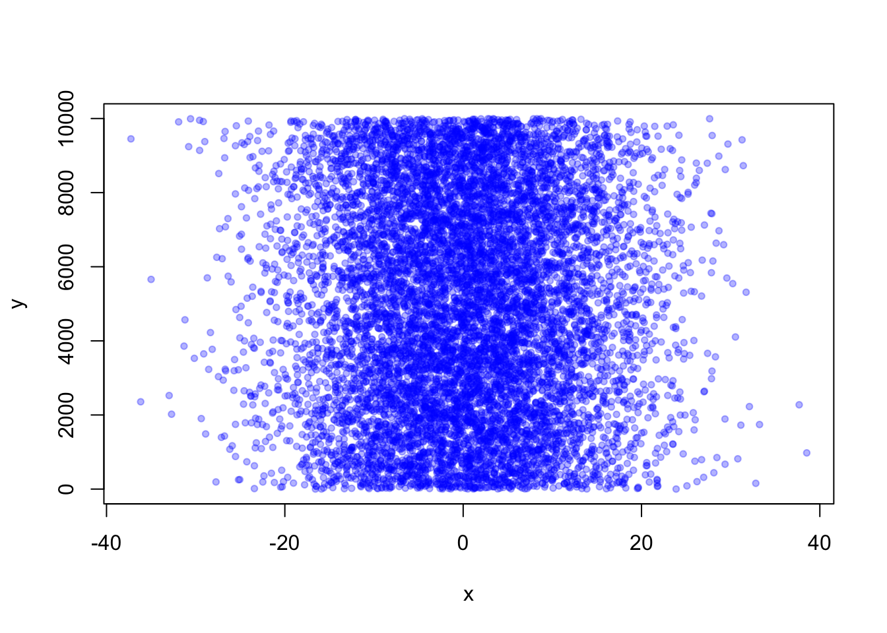
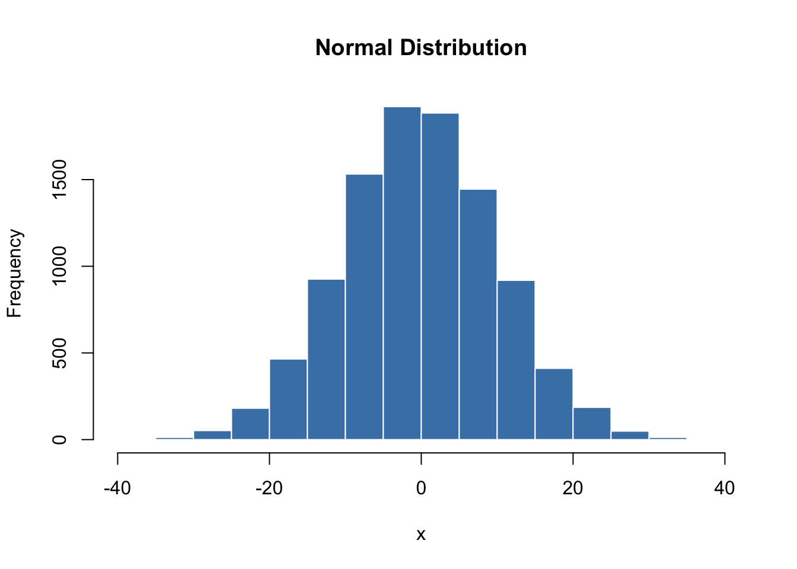
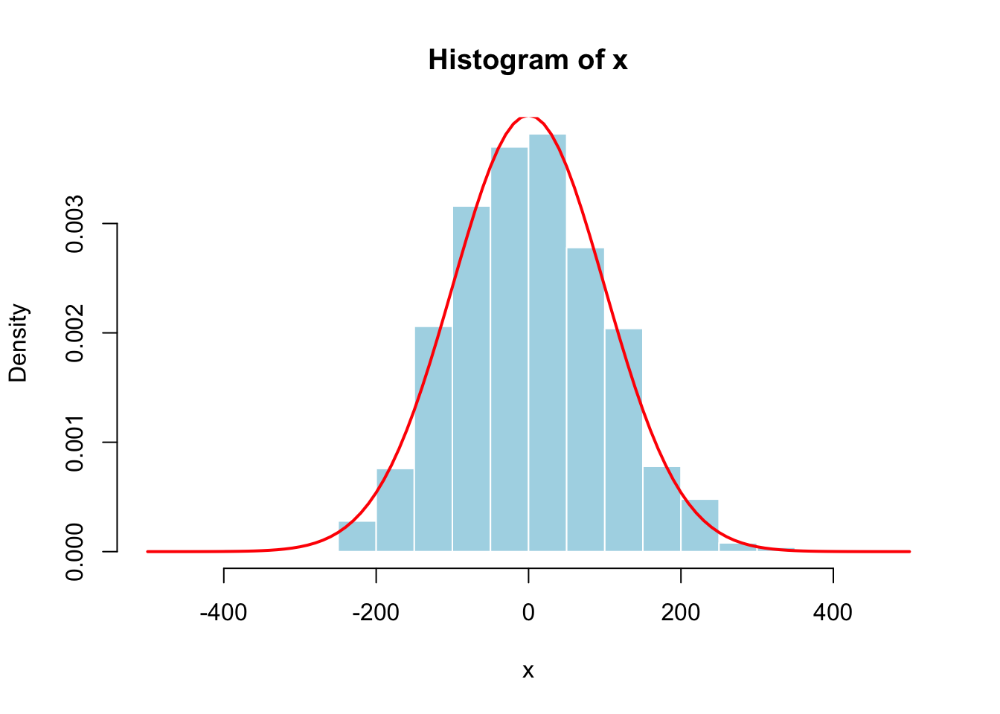
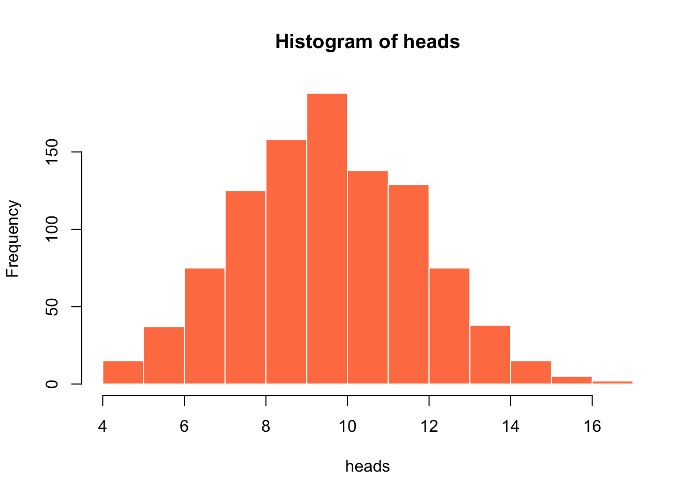
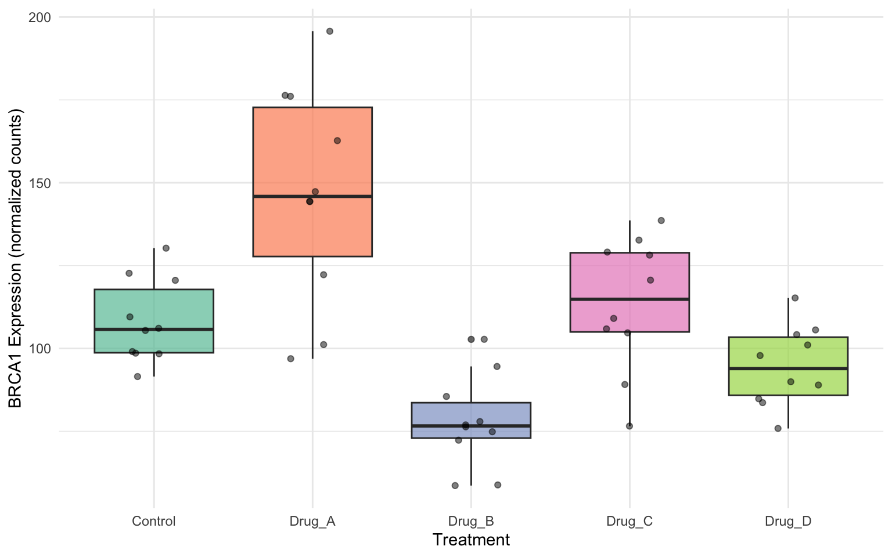

install.packages("tidyverse")
library(tidyverse)Week 1 Statistics for Bioengineering
Introduction
Statistics for Bioengineers and Bioscientists
Welcome to the course!
This term we will build your skills in statistical thinking, programming in R and Unix, reproducible research practices, and data visualization.
Goals of the course
This is a practical course and we will learn by doing
- Teach fundamental skills for your scientific careers
- Provide broad coverage of modern statistics
- Provide computational tools necessary for your work
- Prepare you for more advanced statistics and programming
What will you learn?
- Read and write code in Unix and R
- Implement reproducible research practices
- Exploratory data analysis and visualization
- Probability, distributions, and sampling
- Experimental design and hypothesis testing
- Statistical analyses (t-tests, contingency tests)
- Linear and non-linear modeling
- Classical machine learning
- Ordination (PCA, tSNE, UMAP)


Class Logistics
Schedule: Tuesdays and Thursdays, 4:00pm - 5:50pm in KC107
Most of class time will be hands-on coding practice.
Assignments:
- Weeks 2-9: Coding and statistics homework (due before class on Tuesday in two weeks)
- Weeks 10-11: Final coding project designing scripts for your research
Required Materials
- Access to a laptop running Windows, MacOS, or Linux
- Announcements and assignments posted on Canvas
- Course material: https://wcresko.github.io/BioE_Stats_Wi2026/
- Reading material: https://wcresko.github.io/BioE_Stats_Book/
No textbooks or purchases required!
Class Introductions
Who are you?
- Your name and year in grad school
- Home lab or rotation lab
- What is your good news this week?
- What has your experience with programming/statistics been like?
Why Statistics & Coding?
Why do we need statistics?
The Problem: We almost never know the world perfectly, but still need to draw conclusions or make decisions. We estimate parameters from samples and test hypotheses using data.
The Solution: Well-known mathematical rules help us do this. Computers let us apply them quickly and visualize large amounts of data.
What statistics enables:
- Point estimates and confidence intervals
- Experimental design and hypothesis testing
- Data reduction of highly dimensional data
Foundation Required
We need a firm understanding of probability, sampling, and distributions.
Why do we need coding and scripting?
- Incredibly fast and powerful for repeated actions
- Handles large datasets that Excel and GUIs can’t manage
- Access to thousands of free programs made for and by scientists
- Commands work identically across platforms and on clusters like Talapas
The Most Important Reason
REPRODUCIBILITY — You can keep your scripts to see exactly what was done
Coding vs. Scripting
| Type | Description | Examples | Speed | Flexibility |
|---|---|---|---|---|
| Coding | Uses compilers to translate code | C++, Fortran | Faster | Less flexible |
| Scripting | Interpreted on the fly | Python, R, Julia | Slower | More flexible |
Note
The distinction has become fuzzy—most modern pipelines combine both approaches.
Programming Languages
Programming languages are called languages for a reason:
- Learning to program is like learning a new spoken language
- Learning one helps you learn another
- Use it or lose it! Practice is the best way to maintain skills
Remember
Computers are literal! You must use explicit, pre-defined phrases to tell your computer exactly what you want.
BREAK
Installing Programs
Platform Considerations
Note
- Mac and Linux use the same shell language
- Windows requires additional setup (WSL2)
- R and RStudio work on any platform
Installing R and RStudio
R Installation:
- Download from: https://www.r-project.org
- Can run from command line or on clusters
RStudio Installation:
- Download from: http://www.rstudio.com
- Use the Desktop Open Source (Free) version
- Provides helpful features like code completion and debugging
RStudio

Accessing the Shell
- Mac users: Open the “Terminal” app or use ‘iTerm2’
- Linux users: Open one of several “Terminal” apps
Windows users have additional setup
See the next slides for WSL2 installation
Accessing the Shell — Windows
Installation Steps:
- Guide: https://ubuntu.com/tutorials/install-ubuntu-on-wsl2-on-windows-10
- Run Windows PowerShell as administrator
- Install WSL2 by typing
wsl --install - Restart your computer
- Search for and install Ubuntu from Microsoft Store
Alternative: Type wsl --install -d ubuntu on PowerShell to do steps 3-5 at once
Windows Setup (continued)
- Open Ubuntu and set up a username and password (doesn’t need to match Windows login)
- Run
sudo apt updatethensudo apt upgradeto ensure everything is current - Create folders and files within your Ubuntu folder
The Unix Shell

What is Unix?
- A scripting language developed in 1969, released in 1973
- Serves as the base language for many programs and computers
- Linux is an open-source version of the same language
What is a Shell?
- The ‘shell’ is a program that takes commands and gives them to the operating system
- Bash acts as the shell in Macs, Linux, and now Windows (via WSL)
- You access the shell via a terminal window

Shell Command Structure

| Component | Description |
|---|---|
| Prompt | Indicates computer is ready to accept a command |
| Command | Tells computer to do a specific task |
| Options | Change the behavior of a command |
| Argument | What the command should operate on |
Getting Help
Manual pages:
- Type
man [command_name]to access the manual - Type
qto exit
Also…the internet!
- Stack Overflow, GitHub discussions, official documentation
Navigation Commands
The way you normally navigate


How is a Computer Organized?
- System of directories (folders) and files
/= the root directory, which holds all other directories~is shorthand for your home folder- The “path” refers to file location (e.g.,
/Users/wcresko/Documents)


Let’s Practice!
Exercise
- Try navigating around your computer using
cdandls - Ubuntu users: Create some empty directories first
Working with Files
File Commands
| Command | Function |
|---|---|
mkdir |
Make new folders |
nano, touch |
Make new files |
mv |
Rename or move files |
cp |
Copy files |
rm |
Delete files |
wc |
Word count / file length |
cat |
Reading/concatenating files |
head, tail |
View beginning or end of files |
Naming Conventions
- Avoid spaces in file names
- Don’t start with a
– - Stick to letters, numbers,
.,-, and_ - Use appropriate file extensions (.fasta, .txt, etc.)
The shell trusts you
It will delete files you say to delete and override files with duplicate names!
File Exercise
Exercise
- Make a new directory and add a file named
practice.txtwith some text - Read the contents and get its length
- Rename the file to
super_practice.txt - Move it to a new folder named
sandbox - Make a copy named
super_practice_copy.txt - Verify the contents match, then delete the original
BREAK
R and RStudio
The RStudio Panes
| Pane | Location | Purpose |
|---|---|---|
| Source | Top-left | Write/edit scripts, view data |
| Console | Bottom-left | Interactive R session |
| Environment | Top-right | View objects, command history |
| Files/Plots/Help | Bottom-right | Navigate files, view plots, get help |
Tip
Customize layout in Tools → Global Options → Pane Layout
Why use R?
- Powerful, flexible, and free
- Runs on all platforms
- Superb data management & graphics capabilities
- Thousands of community-contributed packages
- Embed analyses in dynamic documents using Quarto
- Lots of online help available
R Resources
| Resource | URL |
|---|---|
| The R Project | http://www.r-project.org |
| RStudio | http://www.rstudio.com |
| R for Data Science | https://r4ds.had.co.nz |
| Quick R | http://www.statmethods.net |
| Bioconductor | http://www.bioconductor.org |
| Stack Overflow | https://stackoverflow.com/questions/tagged/r |
Tip
When you get an error, paste it into Google—someone else has had the same problem!
Installing and Loading Packages
R’s power comes from community-contributed packages:
- Install once (downloads package)
- Load each session (makes functions available)
Note
Also install via RStudio: Tools → Install Packages
The Tidyverse Ecosystem
| Package | Purpose |
|---|---|
dplyr |
Data manipulation (filter, select, mutate, summarize) |
ggplot2 |
Data visualization |
tidyr |
Reshaping data (pivot, separate, unite) |
readr |
Fast reading of CSV, TSV files |
stringr |
String manipulation |
purrr |
Functional programming tools |
Loading tidyverse loads all of these at once!
R Basics
R Script Basics
- A series of R commands that will be executed
- Add comments using hashtags
# - Use pipes to connect steps
Best Practice
Always comment your code! Future you will thank present you.
Basic Math in R
- Commands submitted through terminal, console, or scripts
- Anything following
#is a comment - R follows standard mathematical order of operations
4*4[1] 16(4+3*2^2)[1] 16Assigning Variables
- Use the
<-operator - Names must begin with a letter
- R is case sensitive
x <- 2
x*3[1] 6y <- x * 3
y-2[1] 4These do not work: 3y <- 3 or 3*y <- 3
Arithmetic and Functions
x+2
x^2
log(x)logis a built-in function—the object goes in parentheses- Results can be assigned to new variables
y <- 67
x <- 124
z <- (x*y)^2
print(z)[1] 69022864Common Data Types
| Statistical Term | Description | R Type |
|---|---|---|
| Numerical (continuous) | Measurements (height, weight) | numeric |
| Numerical (discrete) | Whole number counts | integer |
| Categorical (nominal) | Unordered categories (species) | factor |
| Categorical (ordinal) | Ordered categories (low/med/high) | ordered factor |
| Logical / Boolean | TRUE or FALSE values | logical |
| Text / String | Free-form text | character |
| Date / Time | Temporal data | Date, POSIXct |
Tip
Use class() or str() to check data types
Strings
- Characters need quotation marks
c()stands forconcatenate
x <- "I Love"
y <- "Biostatistics"
z <- c(x,y)
print(z)[1] "I Love" "Biostatistics"Factors
- Sometimes we want to treat characters as units for calculations
- These are called
factors—important for statistical analyses comparing groups
z <- "low, medium, high"
z_factor <- as.factor(z)
print(z_factor)[1] low, medium, high
Levels: low, medium, highData Type Coercion
Convert between data types using as.* functions:
| Function | Input | Output |
|---|---|---|
as.numeric("42") |
"42" |
42 |
as.numeric("hello") |
"hello" |
NA (with warning) |
as.character(42) |
42 |
"42" |
as.logical(1) |
1 |
TRUE |
as.logical(0) |
0 |
FALSE |
Warning
as.numeric() on a factor returns integer codes! Use as.numeric(as.character(x)) instead.
Vectors
R thinks in terms of vectors (lists of values):
x <- c(2,3,4,2,1,2,4,5,10,8,9)
print(x) [1] 2 3 4 2 1 2 4 5 10 8 9Creating Vectors
Use functions like seq and sample:
seq_1 <- seq(0.0, 10.0, by = 0.1)
print(seq_1) [1] 0.0 0.1 0.2 0.3 0.4 0.5 0.6 0.7 0.8 0.9 1.0 1.1 1.2 1.3 1.4
[16] 1.5 1.6 1.7 1.8 1.9 2.0 2.1 2.2 2.3 2.4 2.5 2.6 2.7 2.8 2.9
[31] 3.0 3.1 3.2 3.3 3.4 3.5 3.6 3.7 3.8 3.9 4.0 4.1 4.2 4.3 4.4
[46] 4.5 4.6 4.7 4.8 4.9 5.0 5.1 5.2 5.3 5.4 5.5 5.6 5.7 5.8 5.9
[61] 6.0 6.1 6.2 6.3 6.4 6.5 6.6 6.7 6.8 6.9 7.0 7.1 7.2 7.3 7.4
[76] 7.5 7.6 7.7 7.8 7.9 8.0 8.1 8.2 8.3 8.4 8.5 8.6 8.7 8.8 8.9
[91] 9.0 9.1 9.2 9.3 9.4 9.5 9.6 9.7 9.8 9.9 10.0seq_2 <- seq(10.0, 0.0, by = -0.1)
seq_square <- (seq_2)^2
print(seq_square) [1] 100.00 98.01 96.04 94.09 92.16 90.25 88.36 86.49 84.64 82.81
[11] 81.00 79.21 77.44 75.69 73.96 72.25 70.56 68.89 67.24 65.61
[21] 64.00 62.41 60.84 59.29 57.76 56.25 54.76 53.29 51.84 50.41
[31] 49.00 47.61 46.24 44.89 43.56 42.25 40.96 39.69 38.44 37.21
[41] 36.00 34.81 33.64 32.49 31.36 30.25 29.16 28.09 27.04 26.01
[51] 25.00 24.01 23.04 22.09 21.16 20.25 19.36 18.49 17.64 16.81
[61] 16.00 15.21 14.44 13.69 12.96 12.25 11.56 10.89 10.24 9.61
[71] 9.00 8.41 7.84 7.29 6.76 6.25 5.76 5.29 4.84 4.41
[81] 4.00 3.61 3.24 2.89 2.56 2.25 1.96 1.69 1.44 1.21
[91] 1.00 0.81 0.64 0.49 0.36 0.25 0.16 0.09 0.04 0.01
[101] 0.00Basic Statistics Functions on Vectors
| Function | Description |
|---|---|
mean(x) |
Calculate the mean |
median(x) |
Calculate the median |
var(x) |
Calculate the variance |
sd(x) |
Calculate the standard deviation |
sum(x) |
Sum of all values |
length(x) |
Number of elements |
sample(x, replace=T) |
Random sample with replacement |
Logical Operators
| Operator | Meaning | Example |
|---|---|---|
== |
equals | x == 5 |
!= |
not equals | x != 5 |
<, > |
less/greater than | x < 10 |
& |
and | x > 0 & x < 10 |
| |
or | x < 0 | x > 10 |
%in% |
is element of | x %in% c(1, 2, 3) |
x <- c(1, 5, 10, 15, 20)
x > 10
x[x > 10]Handling Missing Data (NA)
| Task | Code | Result |
|---|---|---|
| Check for NA | is.na(x) |
Logical vector |
| Find non-missing | !is.na(x) |
Inverted logical |
| Don’t do this! | x == NA |
Always returns NA |
| Mean ignoring NA | mean(x, na.rm=TRUE) |
Computes mean |
Important
Always use is.na() to check for missing values, never == NA
Special Numeric Values
| Value | Meaning | Example |
|---|---|---|
NA |
Not Available (missing data) | c(1, NA, 3) |
NaN |
Not a Number (undefined math) | 0/0 |
Inf |
Positive infinity | 1/0 |
-Inf |
Negative infinity | -1/0 |
Test with: is.na(), is.nan(), is.infinite(), is.finite()
Getting Help in R
| Command | Description |
|---|---|
help(mean) or ?mean |
Open help page |
example(mean) |
Run examples from help |
help.search("mean") |
Search all help pages |
args(mean) |
Show function arguments |
Working Directory
| Task | Code |
|---|---|
| Check current directory | getwd() |
| Set new directory | setwd("/path/to/folder") |
| List files | list.files() |
Tip
RStudio Projects (File → New Project) automatically set your working directory
Common R Errors
| Error Message | Meaning | Fix |
|---|---|---|
object 'x' not found |
Variable doesn’t exist | Check spelling; run line that creates it |
could not find function |
Package not loaded | Use library() or check spelling |
unexpected ')' |
Mismatched brackets | Count opening/closing brackets |
non-numeric argument |
Wrong data type | Check with class() |
Tip
Read error messages from the bottom up—the last line tells you what went wrong
Drawing Samples from Distributions
x <- rnorm(10000, 0, 10)
y <- sample(1:10000, 10000, replace = T)
plot(x, y, pch = 20, col = rgb(0, 0, 1, 0.3))

Histograms
x <- rnorm(10000, 0, 10)
hist(x, col = "steelblue", border = "white", main = "Normal Distribution")

Density Curves
x <- rnorm(1000, 0, 100)
hist(x, xlim = c(-500,500), col = "lightblue", border = "white", freq = FALSE)
curve(dnorm(x, 0, 100), xlim = c(-500,500), add=TRUE, col='Red', lwd=2)

Binomial Distribution
heads <- rbinom(n=1000, size=20, prob=0.5)
hist(heads, col = "coral", border = "white")

Visualizing Data
plot()andhist()are high-level plotting functions- Low-level functions tweak and beautify plots
- R’s argument options usually make sense—try adjusting them!
Note
Next week we will explore ggplot2!
Multiple Plots
Use par(mfrow=c(rows, cols)) to create composite figures:
seq_1 <- seq(0.0, 10.0, by = 0.1)
seq_2 <- seq(10.0, 0.0, by = -0.1)
par(mfrow=c(2,2))
plot(seq_1, xlab="time", ylab="p in pop 1", type = "p", col = 'red', pch = 19)
plot(seq_2, xlab="time", ylab="p in pop 2", type = "p", col = 'green', pch = 19)
plot((seq_2)^2, xlab="time", ylab="p2 in pop 2", type = "p", col = 'blue', pch = 19)
plot((seq_1)^2, xlab="time", ylab ="p in pop 1", type = "l", col = 'orange', lwd = 2)
Tidy Data & File Types
An Example to Get Started

What is Tidy Data?

Different formats may be appropriate for different applications, but one is particularly convenient for data science: tidy data.
The Three Principles of Tidy Data
- One observation per row — All measurements for a single unit
- One variable per column — Something measured across all units
- One type of observation per data set
New observations can easily be added as rows, and new variables as columns.
Data Set Rules of Thumb
- Store data in nonproprietary formats (plain ASCII text / flat files)
- Keep an uncorrected file when doing analyses
- Use descriptive names for files and variables
- Include a header line with descriptive variable names
- A column should contain only one data type
- Every data set should be accompanied by a
data dictionarythat describes each variable
Creating Data Frames
hydrogel_concentration <- factor(c("low", "high", "high", "high",
"medium", "medium", "medium","low"))
compression <- c(3.4, 3.4, 8.4, 3, 5.6, 8.1, 8.3, 4.5)
conductivity <- c(0, 9.2, 3.8, 5, 5.6, 4.1, 7.1, 5.3)
mydata <- data.frame(hydrogel_concentration, compression, conductivity)
row.names(mydata) <- paste0("Sample_", 1:8)
mydata |>
rownames_to_column(var = "Sample") |>
kable()| Sample | hydrogel_concentration | compression | conductivity |
|---|---|---|---|
| Sample_1 | low | 3.4 | 0.0 |
| Sample_2 | high | 3.4 | 9.2 |
| Sample_3 | high | 8.4 | 3.8 |
| Sample_4 | high | 3.0 | 5.0 |
| Sample_5 | medium | 5.6 | 5.6 |
| Sample_6 | medium | 8.1 | 4.1 |
| Sample_7 | medium | 8.3 | 7.1 |
| Sample_8 | low | 4.5 | 5.3 |
Importing data - Common File Formats
| Format | Extension | Separator | Notes |
|---|---|---|---|
| Comma-separated | .csv |
, |
Most common, works with Excel |
| Tab-separated | .tsv, .txt |
tab | Good for data with commas |
| Plain text | .txt |
varies | Check file for delimiter |
| Excel | .xlsx |
n/a | Use readxl package |
Warning
Always check imported data with head(), str(), or View()
Genomic Data Formats
| Format | Extension | Description |
|---|---|---|
| FASTA | .fasta, .fa |
Sequence data (DNA, RNA, protein) |
| FASTQ | .fastq, .fq |
Sequences with quality scores |
| SAM/BAM | .sam, .bam |
Sequence alignments (text/binary) |
| VCF | .vcf |
Variant call format |
| BED | .bed |
Genomic regions |
Note
Most bioinformatics programs work with FASTQ data
Reading and Writing Data
Reading:
| File Type | Function | Example |
|---|---|---|
| CSV | read.csv() |
read.csv('file.csv') |
| Tab-separated | read.table() |
read.table('file.txt', header=TRUE, sep='\t') |
| Excel | read_excel() |
read_excel('file.xlsx') (requires readxl) |
Writing:
| Task | Function |
|---|---|
| Export as CSV | write.csv(data, "output.csv", row.names=FALSE) |
| Export tab-separated | write.table(data, "output.txt", sep="\t", row.names=FALSE) |
Indexing in Data Frames
| Syntax | Description |
|---|---|
df[,2] |
All rows, column 2 |
df[2,] |
Row 2, all columns |
df[2,3] |
Row 2, column 3 |
df$colname |
Column by name |
df[df$x > 5,] |
Rows where x > 5 |
Understanding Pipes
Pipes chain operations, reading left-to-right instead of inside-out:
# Without pipes (nested - hard to read)
round(mean(sqrt(c(1, 4, 9, 16))), 2)
# With base R pipe |> (R 4.1+)
c(1, 4, 9, 16) |> sqrt() |> mean() |> round(2)
# With magrittr pipe %>% (from tidyverse)
c(1, 4, 9, 16) %>% sqrt() %>% mean() %>% round(2)
Tip
Both |> and %>% work the same. We’ll use |> in this course.
R Exercise: Transcriptomic Data
Exercise
- Examine the data file: How many rows and columns?
- What types of variables are there?
- Read the data file into R and analyze it
Transcriptomic Data Analysis
RNAseq_Data <- read.table('<name_of_file>', header=TRUE, sep=',')
head(RNAseq_Data)
tail(RNAseq_Data)
print(RNAseq_Data$ENSGACG00000000010)
print(RNAseq_Data$ENSGACG00000000010 > 45.0)
summary(RNAseq_Data$ENSGACG00000000003)
boxplot(RNAseq_Data$ENSGACG00000000003 ~ RNAseq_Data$Treatment,
col = "red", ylab = "Expression Level", xlab = "Treatment")Reproducible Research with Quarto
What is Quarto?
- Open-source scientific and technical publishing system
- Combines code + text + outputs in a single document
- Successor to R Markdown with expanded capabilities
- Supports R, Python, Julia, and more
Key Benefits
Reproducibility, documentation, multiple output formats
R Scripts vs. Quarto Files
- R scripts: Just code that runs
- Quarto files: Code embedded in Markdown with annotations
- Documentation: https://quarto.org/docs/authoring/markdown-basics.html
Markdown Basics
Text Formatting
| Syntax | Result |
|---|---|
*italic* |
italic |
**bold** |
bold |
`code` |
code |
Lists: Use
- for bullets,
1. for numbered
Quarto Document Structure
1. YAML Header
---
title: "My Analysis"
author: "Your Name"
format: html
---2. Markdown Text — Regular text with formatting
3. Code Chunks — R (or Python or …) code that runs
Code Chunk Options
Quarto uses #| (hash pipe) for chunk options:
| Option | Description |
|---|---|
#| echo: true |
Show code in output |
#| eval: false |
Don’t run the code |
#| output: false |
Hide results |
#| warning: false |
Hide warnings |
#| fig-cap: "..." |
Figure caption |
#| fig-width: 8 |
Figure width (inches) |
Note that these go into the beginning of each code chunk
Including Images
Basic image:
With options:
{fig-align="center" width="70%"}Equations
Inline math:
$e=mc^2$ → \(e=mc^2\)
Display math:
$$\iint\limits_{a}^{b} f(x,y) \, dx \, dy$$
\[\iint\limits_{a}^{b} f(x,y) \, dx \, dy\]
Example: Biological Data Analysis
set.seed(42)
gene_expression <- tibble(
sample_id = paste0("S", 1:50),
treatment = rep(c("Control", "Drug_A", "Drug_B", "Drug_C", "Drug_D"), each = 10),
gene_BRCA1 = c(rnorm(10, 100, 15), rnorm(10, 150, 20), rnorm(10, 80, 12),
rnorm(10, 120, 18), rnorm(10, 95, 14)),
gene_TP53 = c(rnorm(10, 200, 25), rnorm(10, 180, 22), rnorm(10, 250, 30),
rnorm(10, 190, 28), rnorm(10, 210, 24))
)Example: View the Data
gene_expression |>
head(8) |>
kable(digits = 1)| sample_id | treatment | gene_BRCA1 | gene_TP53 |
|---|---|---|---|
| S1 | Control | 120.6 | 208.0 |
| S2 | Control | 91.5 | 180.4 |
| S3 | Control | 105.4 | 239.4 |
| S4 | Control | 109.5 | 216.1 |
| S5 | Control | 106.1 | 202.2 |
| S6 | Control | 98.4 | 206.9 |
| S7 | Control | 122.7 | 217.0 |
| S8 | Control | 98.6 | 202.2 |
Example: Summary Statistics
gene_expression |>
group_by(treatment) |>
summarise(
n = n(),
BRCA1_mean = mean(gene_BRCA1),
BRCA1_sd = sd(gene_BRCA1),
TP53_mean = mean(gene_TP53),
TP53_sd = sd(gene_TP53)
) |>
kable(digits = 1)| treatment | n | BRCA1_mean | BRCA1_sd | TP53_mean | TP53_sd |
|---|---|---|---|---|---|
| Control | 10 | 108.2 | 12.5 | 200.5 | 30.3 |
| Drug_A | 10 | 146.7 | 32.6 | 191.9 | 15.3 |
| Drug_B | 10 | 77.9 | 13.9 | 243.5 | 23.1 |
| Drug_C | 10 | 113.4 | 20.1 | 197.0 | 21.2 |
| Drug_D | 10 | 94.7 | 12.1 | 207.9 | 25.6 |
Example: Visualization
ggplot(gene_expression, aes(x = treatment, y = gene_BRCA1, fill = treatment)) +
geom_boxplot(alpha = 0.7) +
geom_jitter(width = 0.2, alpha = 0.5) +
labs(x = "Treatment", y = "BRCA1 Expression (normalized counts)") +
theme_minimal() +
theme(legend.position = "none") +
scale_fill_brewer(palette = "Set2")

Example: Statistical Test
anova_result <- aov(gene_BRCA1 ~ treatment, data = gene_expression)
summary(anova_result) Df Sum Sq Mean Sq F value Pr(>F)
treatment 4 26143 6536 16.66 1.91e-08 ***
Residuals 45 17656 392
---
Signif. codes: 0 '***' 0.001 '**' 0.01 '*' 0.05 '.' 0.1 ' ' 1
Note
The p-value indicates whether there are significant differences between groups.
Cross-Referencing
This allows all elements within a Quarto document to be referenced from within the text, and then whenever you render the references are all updated automatically.
| Type | Label Prefix | Reference Syntax |
|---|---|---|
| Figures | #| label: fig- |
@fig-name |
| Tables | #| label: tbl- |
@tbl-name |
| Equations | {#eq-name} |
@eq-name |
| Sections | {#sec-name} |
@sec-name |
Output Formats
Quarto can render to many formats:
Documents: HTML, PDF, Word (.docx), Markdown
Presentations: RevealJS (this presentation!), PowerPoint, Beamer
Website: HTML (all of our class material!)
---
format:
html: default
pdf: default
docx: default
---Why Reproducible Research?
For Science:
- Others can verify your results
- Methods are completely documented
- Enables cumulative knowledge building
For You:
- Future you will understand past work
- Easy to update with new data
- Professional documentation for publications
The Replication Crisis
Many published findings cannot be reproduced. Quarto helps by embedding analysis code directly in documents.